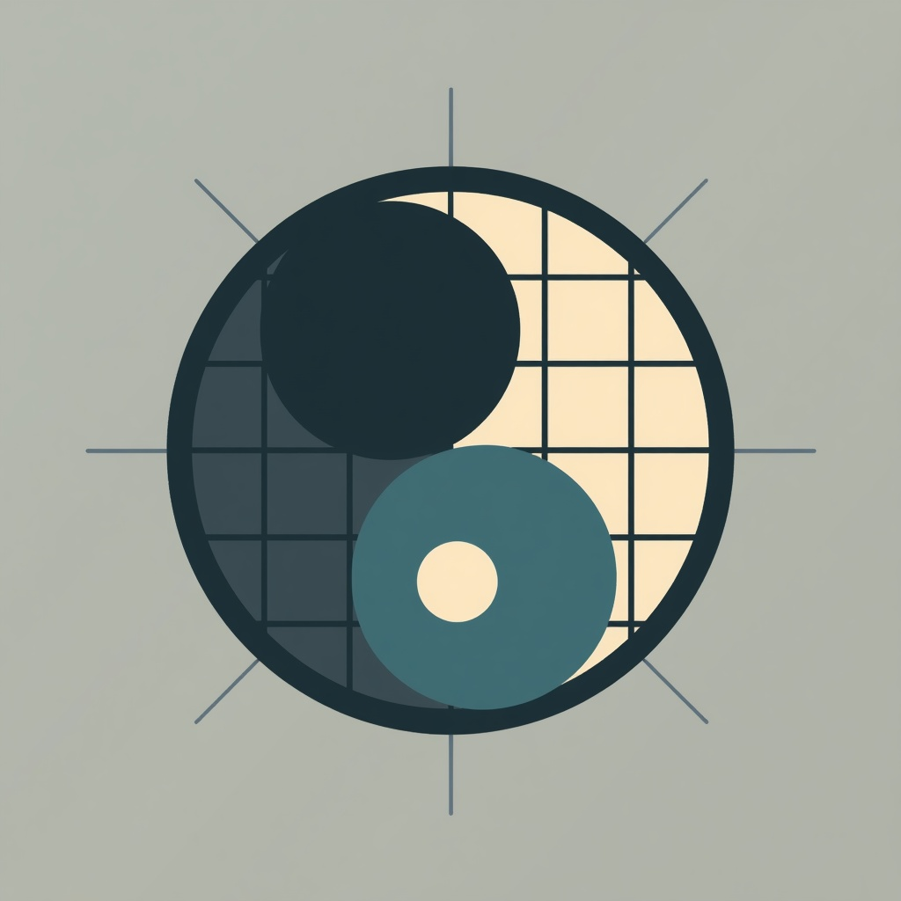

SAND LABS / STRATEGY
A 9×9 board for a local computer opponent or two players. Surround space, protect your groups and know when to pass.
Three unrated local computer levels · Local two-player · Chinese area · White komi 6.5